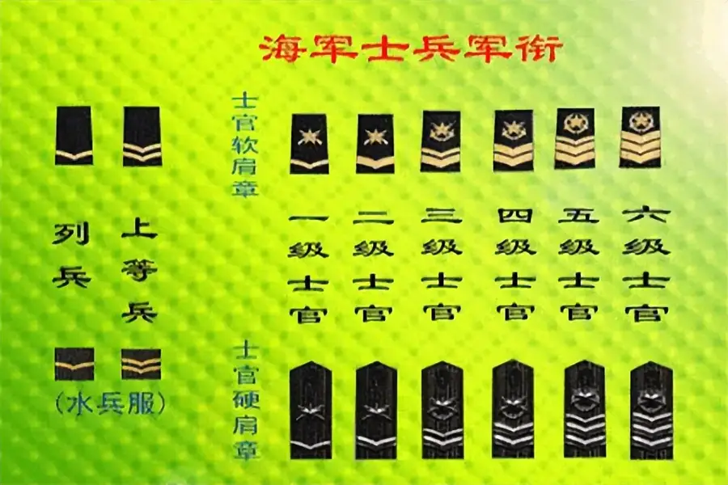

| 型号 | 耐磨件 |
|---|---|
| 型号 | Various |
| 耐磨件 | Roller tires, Cheek plates |
采用优质耐磨合金制造，包括高锰钢、铬钼合金钢和高铬铸铁。
Various
辊套、侧板
嵌入辊面的硬质合金柱钉；通过在柱钉间夹压物料形成自生耐磨层
| Grade | WC | Co | Other |
|---|---|---|---|
| WC-Co Cemented Carbide | 84-89% | 11-16% | ≤1% |
极端硬度用于HPGR辊钉和VSI转子抛料头；纯磨粒磨损下寿命比Cr26高5-10倍；安装需注意防止热冲击
约束辊面边缘物料；防止物料旁路和边缘磨损；堆焊层延长使用寿命
| Grade | C | Si | Mn | Cr | Mo | Ni |
|---|---|---|---|---|---|---|
| Cr-Mo Alloy Steel | 0.15-0.25 | 0.30-0.60 | 0.50-0.80 | 1.00-1.50 | 0.45-0.65 | — |
良好的硬韧性组合；适用于SAG磨机衬板、篦条和破碎机架体衬板的磨粒磨损工况
| Grade | C | Cr | Nb | W | Fe |
|---|---|---|---|---|---|
| Hardfacing Overlay (Cr-C) | 3.0-5.5 | 20.0-35.0 | 4.0-8.0 | 0-10.0 | Balance |
在铸钢基体上堆焊；可重复堆焊3-5次延长使用寿命；立磨辊套和HPGR侧板的经济型方案
碳化钨柱钉镶嵌在HPGR辊面，形成自生耐磨保护层
| Grade | C | Si | Mn | Cr | Mo |
|---|---|---|---|---|---|
| Cr26 | 2.0-3.3 | ≤1.2 | ≤1.5 | 23.0-30.0 | ≤2.0 |
最高硬度抗磨料磨损；细碎和研磨低冲击工况最佳